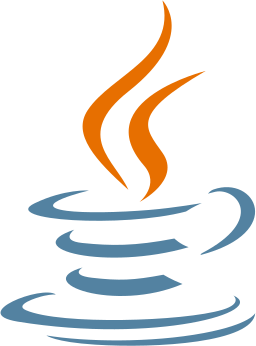

TCC · Testes de interface, API e carga
Playwright em POM sobre app própria (React + Node.js/Prisma), API encadeada com Postman/Newman, k6 com InfluxDB/Grafana e GitHub Actions.
QA Engineer · Instituto Atlântico & UFC
Estagiário de QA no Instituto Atlântico e graduando em Engenharia de Software pela UFC. Valido fluxos Salesforce, APIs REST e aplicações web com Playwright, Cypress, TypeScript e k6.
test("Deve realizar login com sucesso", async ({ loginPage }) => {
await loginPage.login(userEmail, userPassword);
await loginPage.expectLoginSuccess();
});O painel ilustra como organizo as suítes e as etapas de CI. No TCC, testo a interface com Playwright, verifico a API com Newman e acompanho a latência com k6. Ver execuções no GitHub Actions
main
#tcc
1m 52s
Running
main
git fetch --depth 14s
docker compose up -d22s
npx playwright test30s
k6 run load-test.jsQueued
deploy gh-pagesQueued
Playwright em POM sobre app própria (React + Node.js/Prisma), API encadeada com Postman/Newman, k6 com InfluxDB/Grafana e GitHub Actions.
Testes da aplicação bancária BugBank com Cypress e TypeScript, cenários BDD em português com Cucumber e relatórios Allure.
Projeto prático da formação Playwright Zombie Edition com Playwright 1.55, TypeScript, variáveis dotenv e fixtures estruturadas em JSON.
Desenvolvo e mantenho testes automatizados E2E com Playwright e TypeScript para oportunidades comerciais no Salesforce, executo testes funcionais e exploratórios, analiso histórias de usuário e registro defeitos com severidade e evidências.
Implementei testes automatizados de API e interface E2E com Cypress, testes unitários com JUnit e análise de histórias de usuário para mapear cenários positivos, negativos e de exceção.
Playwright e Cypress com POM, Fixtures, traces e screenshots.
Postman e Newman para status HTTP, contratos e tokens JWT.
Smoke, load, stress e spike com k6 (P95, throughput) e JMeter.
Testes manuais, exploratórios e regressão; equivalência e valor limite.
JUnit e SQL básico em PostgreSQL, MySQL e MongoDB.
Git, GitHub Actions, Docker, Grafana, Jira e Kanban.

Java JUnit k6Fluxo aplicado no dia a dia com Jira e Kanban para garantir rastreabilidade e melhoria contínua com equipes de desenvolvimento.
Leitura de histórias de usuário, regras de negócio e critérios de aceite durante o refinamento.
Elaboração de casos positivos, negativos e de exceção usando equivalência, valor limite e tabelas de decisão.
Testes funcionais manuais, exploratórios e de regressão registrando passos, resultados, status e evidências.
Integração de testes E2E (Playwright/Cypress), API (Newman) e carga (k6) no GitHub Actions.
Registro detalhado com descrição e severidade, monitoramento no Grafana e relatórios Allure.
Objetivo atual: Oportunidade como QA Júnior ou Analista de Testes Júnior em equipes de engenharia de software.
Baixar currículo completoBusco oportunidade como QA Júnior ou Analista de Testes Júnior para contribuir na qualidade de produtos e pipelines de entrega contínua.